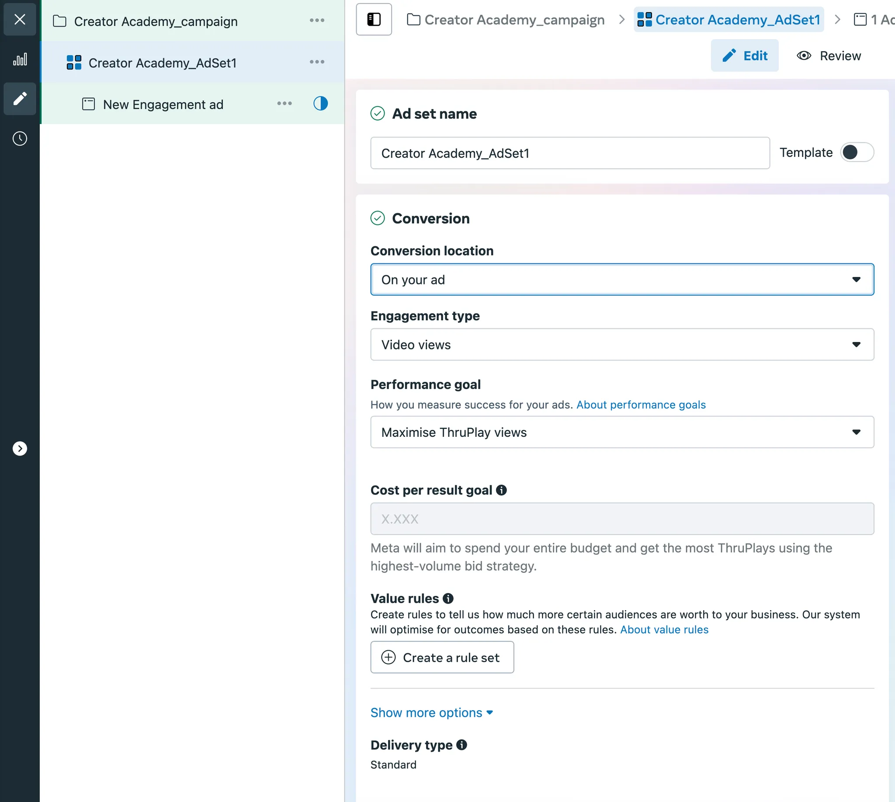

Predict the performance of your videos before posting them.
This is how you check how long people would watch your video for, and see exactly at which points they might drop off and stop watching.
You will need 3 main elements to create an Ad Test on Facebook:
Here’s exactly what you need to do. No extra information.
If something isn’t mentioned here, you probably don’t need to touch it.
Go to adsmanager.facebook.com and select Campaigns from the menu on the left.
Under the Campaigns tab, click the green [+ Create] button.
Select Engagement as the objective of the campaign.
When prompted to choose a campaign setup, pick Manual engagement campaign for full control over settings.
We will be working with three containers: the Campaign, the Ad Set, and the Ad.
Let’s set up the Campaign first. All you need to do here is give your advertising campaign a unique name that will not repeat with other campaigns you create.
Next, we’ll set up the Ad Set. After giving your Ad Set a unique name, change the Conversion location to On your ad.
Your settings under the Conversion section should look like this:
Scroll down to the Budget & schedule section and select Lifetime budget. A lifetime budget between $3–$5 will usually be enough to achieve about 1,000 impressions.
Adjust the Start and End dates so they are 24 hours apart. It helps to start the campaign 30 minutes to 1 hour after the current time to account for processing and uploading videos. If you’re travelling, keep an eye on time zones. After making these changes, double‑check that your budget hasn’t been altered.
If you’re working with many Facebook pages, select the one you’d like to create the test for under the Identity section of the Ad container.
Once your Ad Set has been configured, scroll down to the Ad container and click New Ad. This section guides you through uploading your video and preparing the creative. Meta organises these tasks into a series of steps:
During the Media step, select the video you want to test from your account’s media library or upload a new file. Only one video can be selected for each ad.
Meta will guide you through each step. You can skip the Trim and Crop steps since this test should use your full‑length video. In the Text step, add a simple headline or leave it blank if you only want to measure how well the video itself holds attention.
When you reach the Enhancements panel, turn off all options (Translate text, Visual touch‑ups, Text improvements and Add video effects) to ensure your creative is not altered. Meta’s AI enhancements can change the look and feel of your ad, so leave them disabled for an accurate test.
After completing your creative setup, click the Publish button at the bottom right of Ads Manager to launch your test campaign. The campaign will run according to the start and end dates you selected earlier.
To test multiple videos at once, duplicate your Ad Set after publishing. In each duplicate, replace the video in the Media step with a new creative while keeping all other settings identical. This allows you to compare performance across different videos while maintaining consistent targeting, budget and schedule.